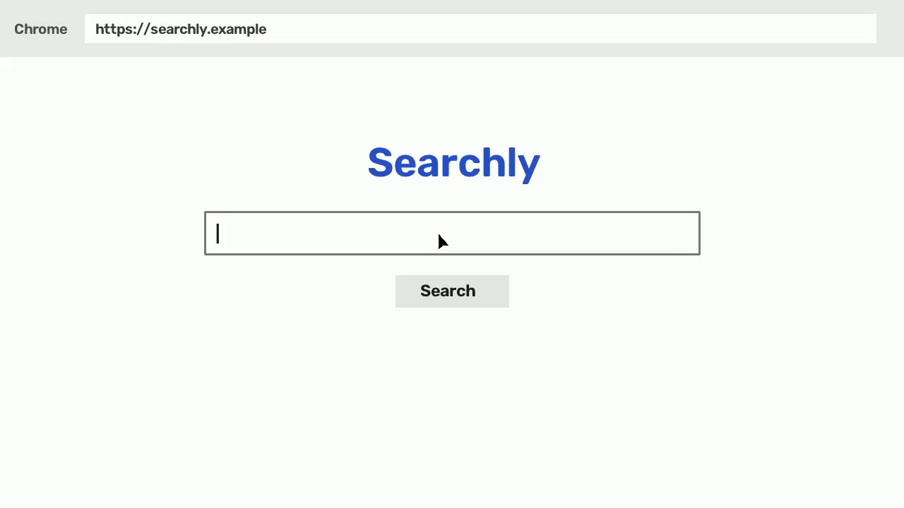
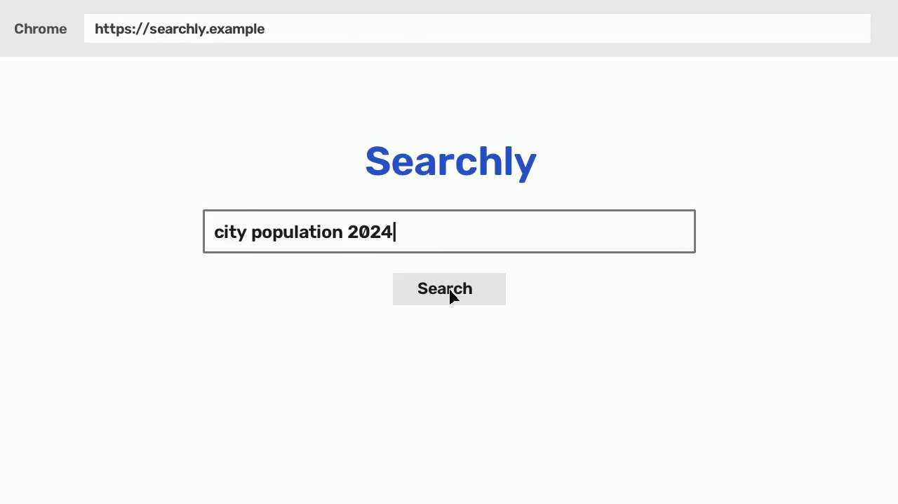
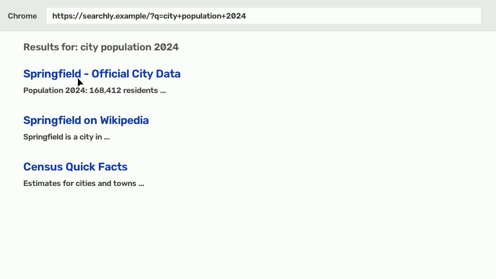
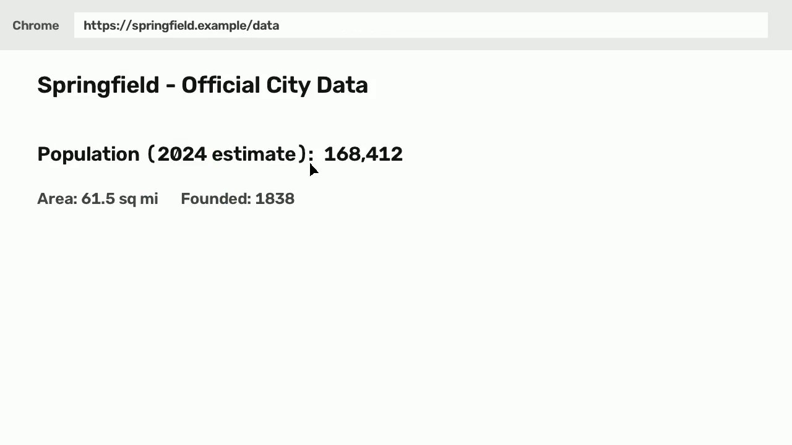

The workflow involves searching for city population data using a web browser, navigating to an official data source, and transcribing the identified value into a specific cell in an Excel spreadsheet.
Inputs
search_query e.g. city population 2024
city_name e.g. Springfield
spreadsheet_file e.g. City Research.xlsx
target_cell e.g. B2
Open questions
Should the population value '186,412' be corrected to '168,412' in the spreadsheet to match the source data?
Notes
Built from an imported video without mouse/keyboard data; confidence is lower and more steps are flagged.
Step 1 · type · confidence 0.80
Search for city population data
In Chrome, type 'city population 2024' into the Searchly search bar and click the 'Search' button.
App
Chrome - Searchly
Target
Search
Value
city population 2024
Expected
Search results for the query are displayed.
Screenshots (before / after)


Step 2 · click · confidence 0.80
Navigate to official city data
Click on the first search result link titled 'Springfield - Official City Data'.
App
Chrome - Searchly
Target
Springfield - Official City Data
Expected
The browser navigates to the official city data page for Springfield.
Screenshots (before / after)

Step 3 · read · confidence 0.90
Identify the 2024 population estimate
Locate and read the population estimate for 2024 on the city data page.
App
Chrome - https://springfield.example/data
Target
Population (2024 estimate):
Value
168,412
Expected
The population value '168,412' is identified.
Screenshots (before / after)

Step 4 · type · confidence 0.80
Record population in spreadsheet
Switch to the 'City Research.xlsx' spreadsheet and type the population value into cell B2 for Springfield, then wait for the 'All changes saved' confirmation.
App
Sheets - City Research.xlsx
Target
Cell B2
Value
186,412
Expected
The value is entered and the spreadsheet confirms the changes are saved.
⚠️ Needs review
Check: The value entered '186,412' differs from the value read '168,412' in the previous step, suggesting a transcription error.
Evidence: [00:00:13] shows the spreadsheet application in focus. | The user typed '186,412' in cell B2 ([00:00:17]), which is a typo compared to the source value '168,412' seen in [00:00:09]. | [00:00:18] shows a toast notification at the bottom right stating 'All changes saved'.